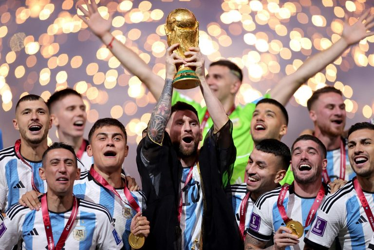

ARGENTINA CAMPEÃ DA COPA!! 🇦🇷
Por: Galo Louco Noticias (Bruno & Pedro)
Goleada histórica! Na noite de 19 de julho de 2026, a Argentina deu um show inesquecível e atropelou a França por 8 a 2, garantindo o título mundial com uma facilidade impressionante. Para fechar com chave de ouro, Lionel Messi conquistou sua segunda taça na carreira em sua última e definitiva Copa do Mundo, eternizando sua despedida no topo do futebol!